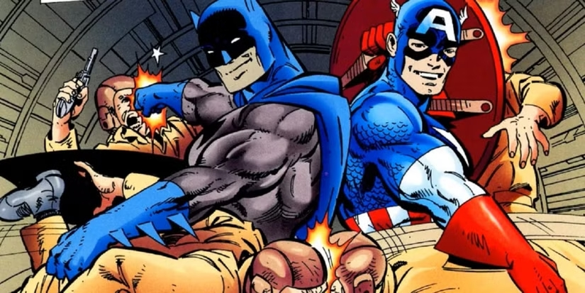
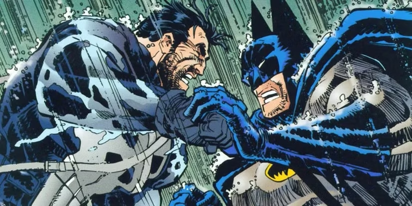
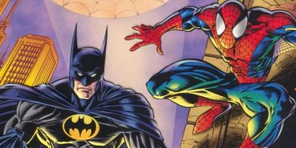
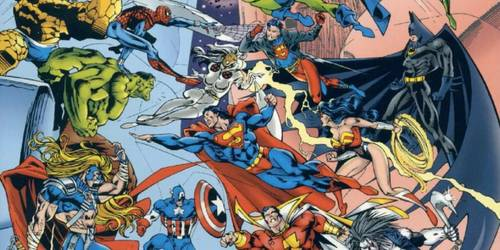

Batman debarque dans Marvel!!
Le premier d'une longue liste
Batman, alias Bruce Wayne, est un super-héros de fiction appartenant à l'univers de DC Comics. Créé par le dessinateur Bob Kane et le scénariste Bill Finger, il apparaît pour la première fois dans le comic book Detective Comics no 27 en 1939— mai 1939 comme date sur la couverture mais la date réelle de parution est le 30 mars 1939 — sous le nom de The Bat-Man. Bien que ce soit le succès de Superman qui ait mené sa création, il se détache de ce modèle puisqu'il n'a aucun pouvoir surhumain. Batman n'est en effet qu'un simple humain qui a décidé de lutter contre le crime après avoir vu ses parents se faire abattre par un voleur dans une ruelle, Crime Alley, de Gotham City, la ville où se déroulent la plupart de ses aventures. Malgré sa réputation de héros solitaire, il sait s'entourer d'alliés, comme Robin, son majordome Alfred Pennyworth ou encore le commissaire de police James Gordon.

Le premier crossover anoncer pour fin 2025 est Batman et captaine América

Batman et Captain America sont tous deux des icônes pour leurs éditeurs de bandes dessinées respectifs, et l'association entre les deux s'est avérée être un choix parfait pour les versions Golden Age des héros. Créé par John Byrne et Patricia Mulvihill, Batman/Captain America a vu le héros Marvel et son partenaire Bucky Barnes se voir assignés à une mission secrète menant au Crâne Rouge et, par conséquent, finir par rencontrer le duo dynamique de Gotham City.Les deux couples découvrent qu'ils sont sur la même affaire puisque le Crâne Rouge et le Joker sont du même côté. Batman/Captain America était un hommage coloré et audacieux aux jours de l'Âge d'Or.
Pour 2027: Punisher/Batman : Chevaliers mortels

Le Punisher est considéré comme l'antihéros le plus célèbre de Marvel Comics , et il est sans conteste le plus connu de tous les antihéros de la bande dessinée. Et compte tenu de la zone grise dans laquelle évolue Frank Castle et de la position morale inébranlable de Bruce Wayne/Batman contre les armes à feu et le meurtre, un croisement entre les deux a naturellement donné lieu à un conflit tendu.
Pour 2030: Spider-Man et Batman : Esprits désordonnés

Sans doute encore plus évident que Captain America, il était inévitable que DC et Marvel associent le Chevalier noir au bien-aimé Wall-Crawler de New York. Spider-Man a l'une des séries les plus prolifiques des comics , et son croisement avec le sombre Batman a donné lieu à des croisements mémorables issus des mythes profonds de chaque personnage.
Pour 2035: DC contre Marvel Comics

Certainement le film le plus attendu voir les personnages de DC combattre leurs homologues de Marvel et le résultat reste encore débattu par les fans. Pour nous se serait une consécration de notre enfance de voir ses filmes là, c'est la raison pour laqu'elle on a fait se site, se fut intéressant et marrant à faire surtout pour le choix du fond